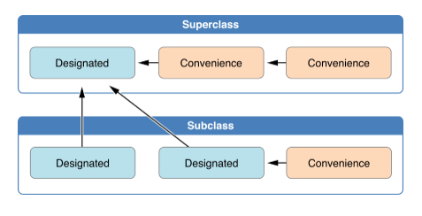
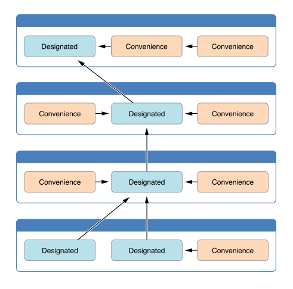
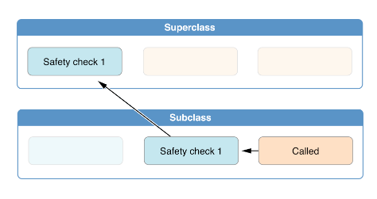
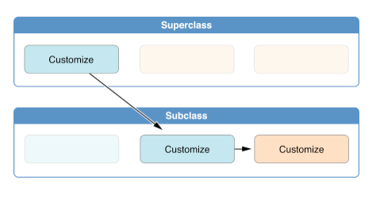
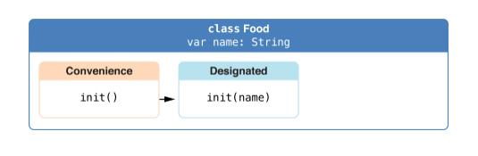
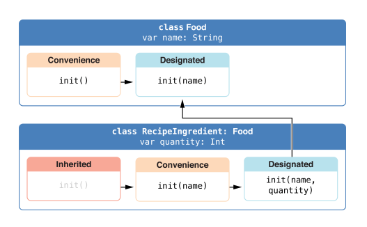
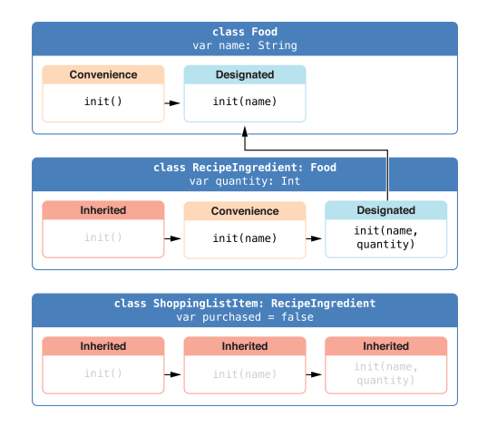

Swift的初始化
初始化发生在class, structure, enumeration初始准备的过程中。coder可以通过定义initializers来实现初始化。值得注意的是，initializers没有返回值。
此外，class还可以实现一个'deinitializer'
如何定义initializer
定义initializer需要用关键字init
Simplest initializer
struct Fahrenhit{
var temperature: Double
init(){
temperature = 32.0
}
}
自定义initializer
可以使用initializer parameters来自定义initializer
struct Celsius{
var temperatureInCelsius: Double
init(fromFahrenhit fahrenhit: Double){
temperatureInCelsius = (fahrenhit - 32.0)/1.8
}
init(fromKelvin kelvin: Double){
temperatureInCelsius = kelvin - 273.15
}
}
调用initializer
由于initializer每个参数默认有external name，所以调用的时候一定要写external name
let boilingPoint = Celsius(fromFahrenhit: 212.0)
let freezePoint = Celsius(fromKelvin: 273.15)
Default initializer
如果structure或者base class没有提供initializer的话，编译器会提供一个默认的init()。
对于structure来说如果没有任何自定义的initializer的话，编译器会还会提供一个memberwise initializer
Initializer Delegation
value类型和class类型的initilizer delegation的规则是不同的
Structure和Enumunation的Intializer Delegation
- 只能在initializer中调用self.init
Class Inheriantance and Initialization
class的initializer分为Designated initializer和Convenience initializer
Designated initializer和Convenience initializer
Designated initializer是primary initializer，每个class只要有一个
init(parameters) { statements }
Convenience initializer是为了方便而存在的，需要通过Designated initializer来初始化，关键字为convenience
convenience init(parameters){ statements }
Initializer Delegattion for Class Types
- Rule1 一个designated initializer必须调用它直接父类的designated initializer
- Rule2 一个convenience initializer必须调用它自己的另一个initializer
- Rule3 一个convenience initializer必须最终调用它自己的designated initializer
可以简单总结为
- designated initializer必须delegate up
- convenience initializer必须delegate across
可以看下图

下面是一个更复杂的例子

两阶段的初始化
在初始化过程中，首先所有的类属性都会被赋予初始值，当这一阶段完成之后，然后在被initializer里代码设置其值
关于这点，swift的编译器会进行一些检查
safety check 1 : designated initializer在delegates up到superclass initializer之前，必须保证所有属性都被初始化了
safety check 2 : designated initializer必须先delegate up到superclass initializer才能赋值给继承下来的属性
safety check 3 : convenience initializer必须先delegate到其他initializer才能修改属性
safety check 4 : initializer需要第一阶段初始化完成才能修改属性，调用成员方法
两阶段初始化的具体过程不详细说了，需要知道的是，当内存分配好之后，先由子类的initializer负责初始化自己的属性，然后向上传递控制权，父类做相同的事情，直到根基类。这时候第一阶段初始化就完成了。第二阶段初始化是从顶向下进行，这时候self就可以访问了，同时可以修改访问self的属性了，调用成员函数了。
第一阶段初始化

第二阶段初始化

Initializer的Inheritance和Override
原则上，swift不允许initializer继承，但是在下列情况下可以继承
如果子类没有写任何designated initializer，子类可以继承所有父类的designated initializer
如果子类提供了所有父类的designated initializer的实现－－无论是继承而来的，还是自己override的，那么自动继承所有的父类的convenience initializer
下面举个例子：
class Food{
var name : String
init(name: String){ self.name = name }
convenience init() { self.init(name: "[Unnamed]") }
}
下图显示了initializer chain

class RecipeIngredient: Food{
var quantity : Int
init(name: String, quantity: Int){
self.quantity = quantity
super.init(name: name)
}
override convenience init(name: String){
self.init(name: name, quantity: 1)
}
}
initializer chain如图

class ShoppingListItem: RecipeIngredient {
var purchased = false
var description: String {
var output = "\(quantity) x \(name)"
output += purchased ? "OK" : "Not"
return output
}
}
initializer chain如图

Failable Initializer
语法如下
init?(parameters){ statments }
举个例子来说 struct Animal{ let species: String init?(species: String){ if species.isEmpty { return nil } self.species = species } }
通过return nil，我们可以表示初始化失败
可以像如下方式来使用 let someCreature = Animal(species: "") if let griaffe = someCreature{ println("no species") }
Failable Initializer for Enumerations
enum TemperatureUnit{
case Kelvin, Celsius, Fahrenheit
init?(symbol: Character){
switch symbol{
case "K": self = .Kelvin
case "C": self = .Celsius
case "K": self = .Fahrenheit
default:
return nil
}
}
}
if let unknowUnit = TemperatureUnit("X") { println("no such unit") }
Automatic Failable Initializer for Enumerations with Raw Value
enum TemperatureUnit : Character{
case Kelvin = "K", Celsius = "C", Fahrenheit = "F"
}
if let unknowUnit = TemperatureUnit("D"){ println ("no such unit") }
Failable Initializer for Classes & Propagation of Initialization Failure
对于类来说，初始化失败只能在所有属性都已经被设置了初始值之后发生
class Product{
let name: String!
init?(name: String){
self.name = name
if name.isEmpty { return nil }
}
}
class CartItem: Product{
let quantity: Int!
init?(name: String, quantity: Int){
self.quantity = quantity
super.init(name: name)
if(quantity < 1) { return nil }
}
}
Override a Failable Initializer
你可以使用non-failable initializer去override父类的failable initializer，但这时就不能再delegate up到failable initilizer
class Document{
var name: String?
init() {}
init?(name: String){
self.name = name
if name.isEmpty { return nil }
}
}
class AutomaticallyNamedDocument: Document{
override init(){
super.init()
self.name = "[Untitled]"
}
override init(name: String){
super.init()
if name.isEmpty{
self.name = "[Untitled]"
}
else{
self.name = name
}
}
}
Required Initializer
required modifier表示该类的每一个子类都必须实现这个initilizer
在子类实现该initializer时候必须也添加required
class SomeClass{
required init(){ ... }
}
class SomeSubClass{
required init(){ ... }
}
Setting a Default Property Value with a Closure or Function
class SomeClass{
let someProperty: SomeType = {
return someValue
}()
}